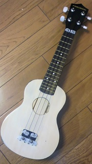
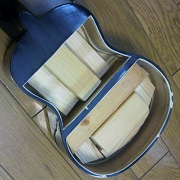
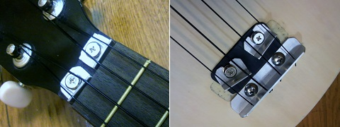

PLAYTECH ウクレレ PTUK-100 改造
2015年02月02日 カテゴリー：ギター関係

なんとなく軽い気持ちでPLAYTECHのウクレレPTUK-100を買ってみました。
最初弾いたとき、思ったよりよくできていると感じました。意外と音が大きいし、フレット端の処理も問題なかったです。
ただ残念ながら、ソプラノタイプ（弦長345mmぐらい）のウクレレは私の手には小さすぎるようです。それとどうしても音程が不安定になりがちです（たぶんスケールが短いと押弦による張力変化の影響が大きくなるため）。なので楽器としての安定性を求めるならテナータイプ（弦長430mmぐらい）を選んだ方がよいと思いました。
とりあえず今回のウクレレは改造してサイレントウクレレにしました。
下写真がボディ裏側です。裏板を切り取って表板に木片を適当に貼り付けています。

ペグのブッシュがグラグラしていたので瞬間接着剤で固定しました。また、ブリッジを取るついでに表板だけ塗装を剥がしてニスを塗っています。ナットとブリッジはアルミで作りました。3弦は特に以前より音程が安定しました。

なんだか今度はギタレレの方が気になりだしたので、そちらに手を出すかもしれません(^_^;